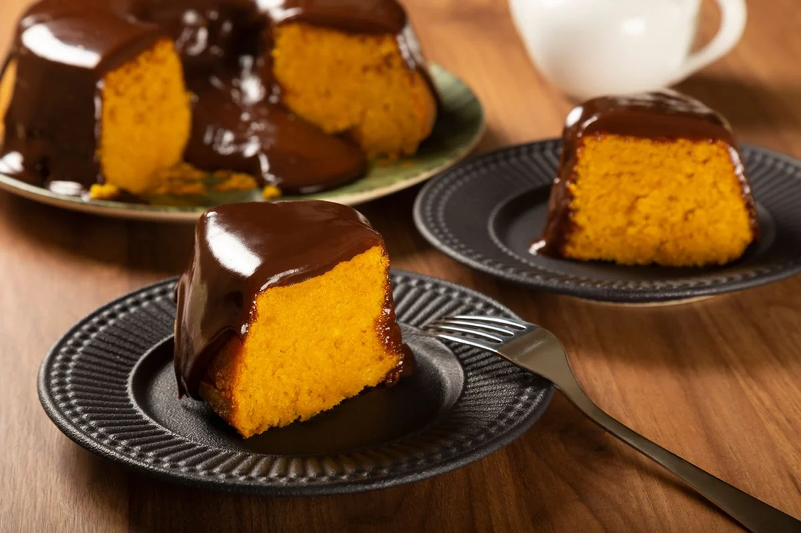

Praticando 4 - Receita de bolo com listas
Voltar ao menu principal
Bolo de cenoura fofinho

Ingredientes:
2 xícaras (chá) de cenoura picada
4 ovos
2 xícaras (chá) de açucar
2 xícaras (chá) de farinha de trigo
1 xícara (chá) de óleo
1 colher (café) de fermento em pó
Cobertura:
1 lata de leite condensado
1 caixinha de creme de leite
1 colher cheia de margarina
3 colheres cheia de chocolate em pó
Modo de preparo
Separe as claras das gemas
Bate as claras em neve e reserve
No liquidificador, coloque a cenoura, o óleo, e as gemas e bata por 5 minutos
Em um tigela, misture a farinha de trigo, o fermento e o açucar, misture bem
Depois junte os ingredientes batidos, misture bem, por último junte as claras em neve
Em um assadeira untada, leve para assar em forno médio, pré-aquecido, por aproximadamente 40 minutos, ou até que fure com um palito e saia limpo
Cobertura
Leve todos os ingredientes ao fogo e mexa até que desgrude da panela